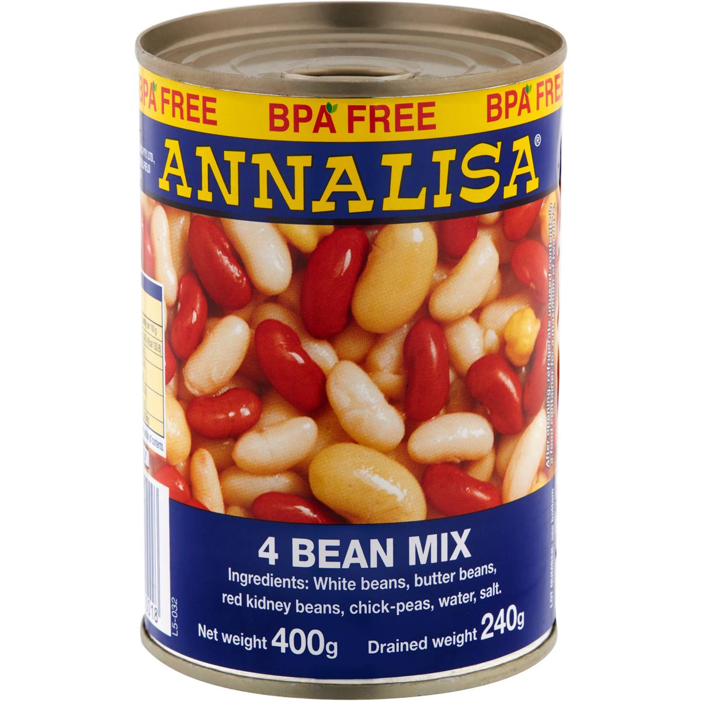

Simple Mixed Beans
It's a hearty, satisfying, simple meal for the weeknight. While it doesn't take a lot of work, it may take more time than
you expect to reduce it down. If you want less leftovers, just use one tin each of beans and tomato.
You can even skip the capsicum if you are feeling especially lazy.

Ingredients
- 1 Onion, finely diced
- 1 Green capsicum, finely diced
- 2 Tins '4 Beans Mix'
- 2 Tins diced tomato
- Toast
- Grated cheese
- Cumin
- Cayenne pepper
- Salt, pepper
Method
- Cook the onion in oil in a medium pot until translucent
- Add capsicum, cook for 5 minutes
- Add the beans, cumin, and cayenne; mix together and cook for 5 minutes
- Add the tomato, salt and pepper
- Reduce to desired thickness (may take half hour or longer)
- Serve on toast with grated cheese sprinkled on top